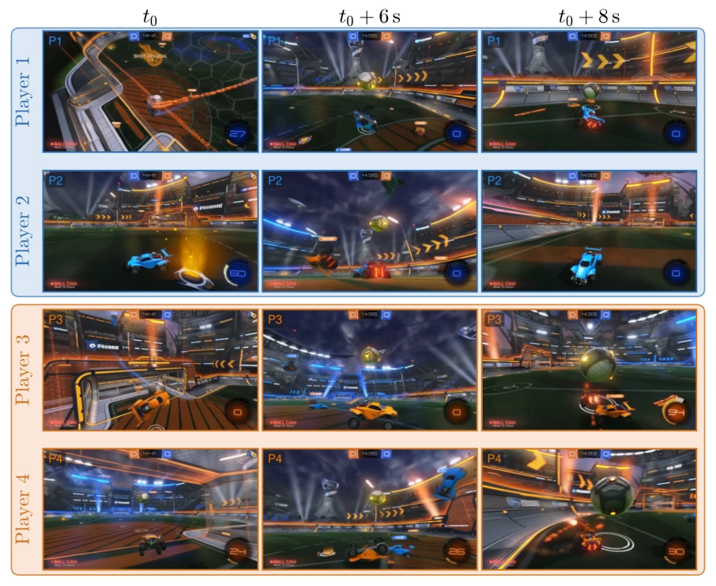
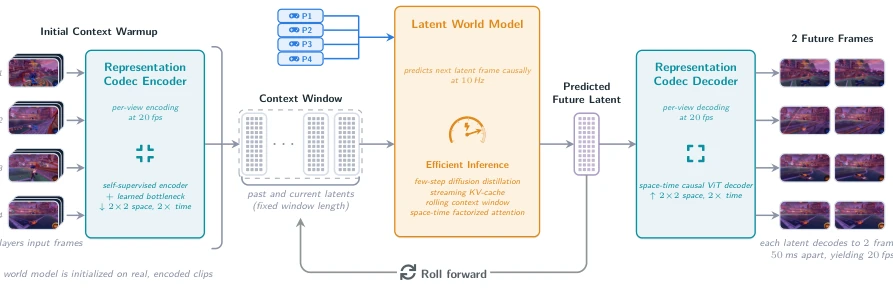
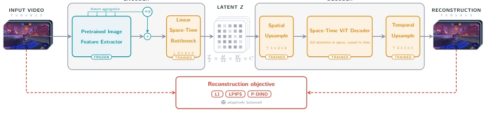
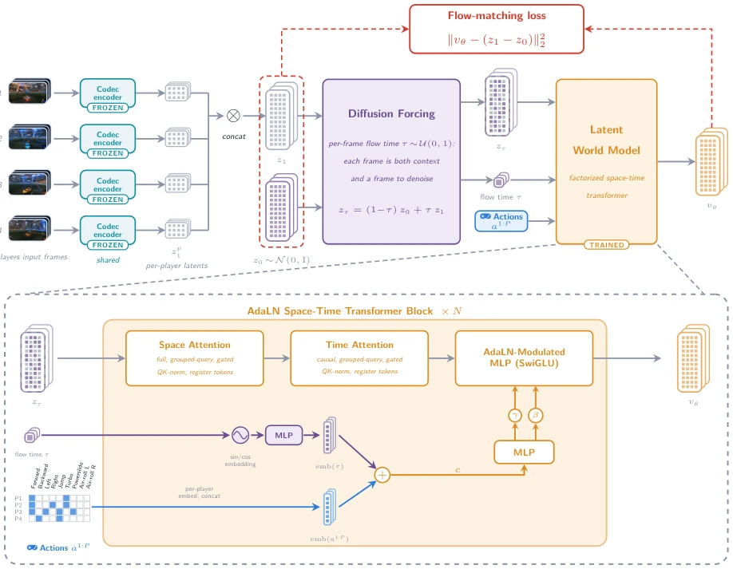
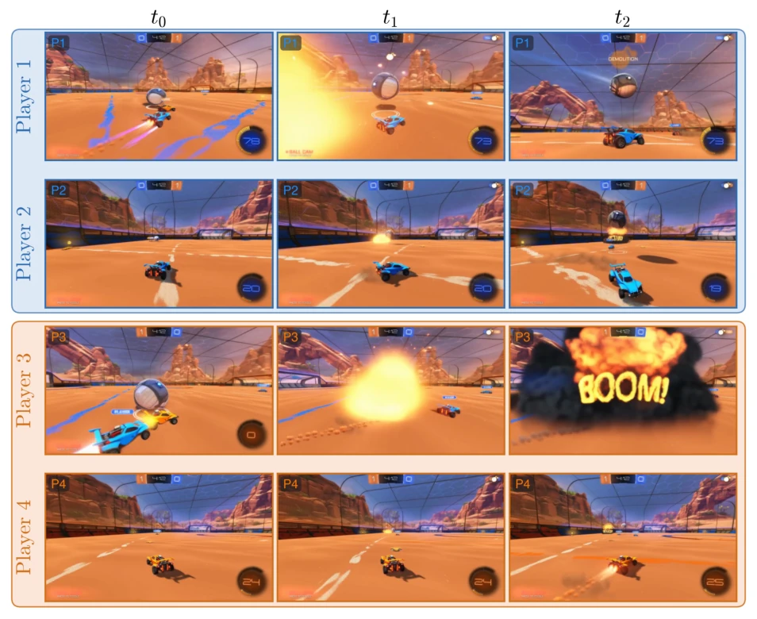
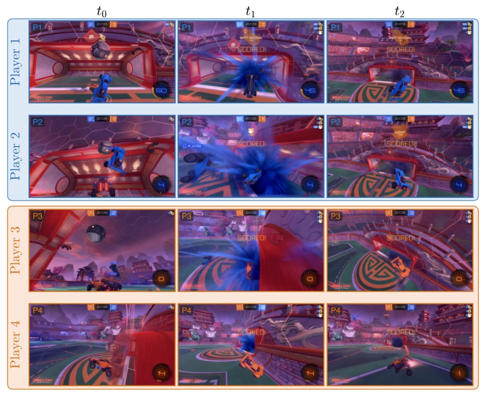
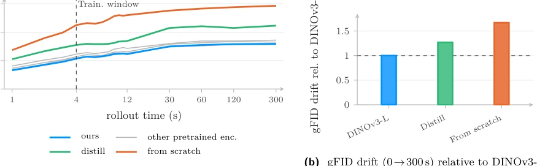
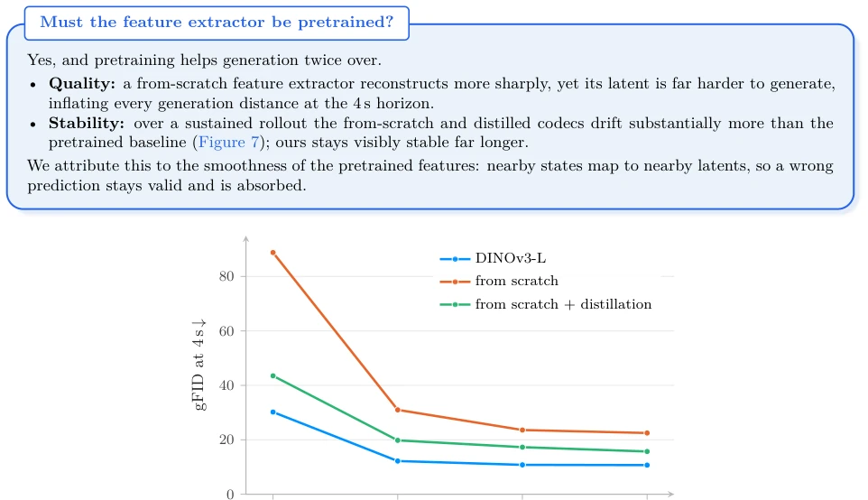
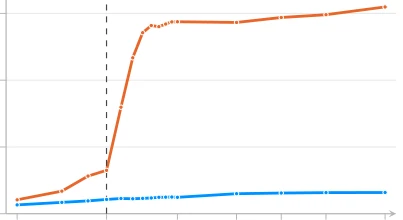
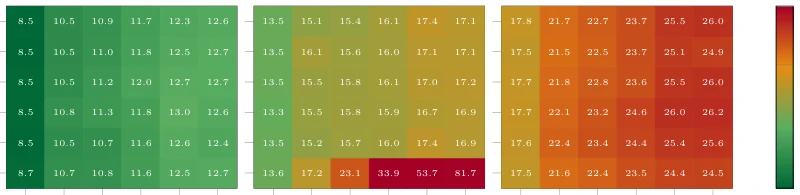

Multiplayer Interactive World Models with Representation Autoencoders
Anthony Hu, Václav Volhejn, Adrien Ramanana Rahary, Chris Mulder, Aditya Makkar, Alyx Liao abspdf
论文点评Review
MIRA 算是给具身智能的“世界模型”圈子里扔了个深水炸弹，毕竟在 Rocket League 这种高动态物理交互场景下，能跑通 4 人实时互动已经是业界首例。50 亿参数模型在单卡 B200 上跑出 20fps，这推理速度确实让人眼前一亮，尤其是长程 rollout 能稳到 5 分钟不崩，比那些一推就糊的扩散模型强多了。不过，别急着吹“通用”，这玩意儿本质还是基于 Bot 数据的仿真器，10,000 小时全是 Nexto 机器人打的，策略单一，地图固定，缺乏人类博弈的随机性和多样性。所谓的“多智能体”更多是条件输入上的堆叠，而非真正的意图建模。物理一致性虽然比纯视觉预测强，但毕竟是在游戏引擎里，离真实世界的物理规律还有距离。总的来说，这是个优秀的技术验证，但离“通用具身智能”还差着几个量级的数据鸿沟。
MIRA can be regarded as dropping a bombshell into the "world model" community of embodied intelligence, especially since achieving 4-player real-time interaction in high-dynamic physical interaction scenarios like Rocket League is already the industry's first. A 5 billion parameter model achieving 20fps on a single B200 card is indeed impressive, particularly as long-term rollouts remain stable for 5 minutes without crashing, far surpassing diffusion models that degrade quickly upon inference. However, do not rush to claim "generalization"; this is essentially a simulator based on Bot data, with 10,000 hours all played by Nexto robots, featuring single strategies, fixed maps, and lacking the randomness and diversity of human gameplay. The so-called "multi-agent" aspect is more of a stacking on conditional inputs rather than true intent modeling. Although physical consistency is superior to pure visual prediction, it remains within a game engine and is still distant from the physical laws of the real world. Overall, this is an excellent technical validation, but there is still a data gap of several orders of magnitude away from "general embodied intelligence."
研究动机Motivation
现有世界模型大多基于单智能体视角，将其他智能体视为环境背景（Ha and Schmidhuber, 2018; Hafner et al., 2019, 2020, 2025a），这限制了它们在自博弈强化学习（Schrittwieser et al., 2020）或人类交互（Abramson et al., 2022）中的应用。虽然近期有工作尝试多智能体条件（如 Pondaven et al., 2026; Savva et al., 2026），但多局限于网格世界或体素环境，物理交互简单。MIRA 旨在解决高动态、强物理耦合场景下的多智能体预测问题。Rocket League 提供了连续物理、高频率动作和复杂交互的测试床，但现有模型难以在保持视觉保真度的同时，准确归因动作与后果的因果关系（Quevedo et al., 2025; Gemini Robotics Team, 2025）。此外，长程 rollout 的累积误差（exposure bias）也是长期痛点（Bengio et al., 2015; Lamb et al., 2016），需要更稳定的生成目标。
Existing world models are mostly based on single-agent perspectives, treating other agents as environmental backgrounds (Ha and Schmidhuber, 2018; Hafner et al., 2019, 2020, 2025a), which limits their application in self-play reinforcement learning (Schrittwieser et al., 2020) or human interaction (Abramson et al., 2022). Although recent work has attempted multi-agent conditions (e.g., Pondaven et al., 2026; Savva et al., 2026), they are mostly limited to grid worlds or voxel environments with simple physical interactions. MIRA aims to address multi-agent prediction problems in high-dynamic, strongly physically coupled scenarios. Rocket League provides a testbed for continuous physics, high-frequency actions, and complex interactions, but existing models struggle to accurately attribute causal relationships between actions and consequences while maintaining visual fidelity (Quevedo et al., 2025; Gemini Robotics Team, 2025). Additionally, cumulative error (exposure bias) in long-term rollouts is also a long-standing pain point (Bengio et al., 2015; Lamb et al., 2016), requiring more stable generation targets.

Figure 1 World model imagination. Rows are the four players’ viewpoints (Players 1–4) and columns show three timesteps in the trajectory (t0 →t0 + 6 s →t0 + 8 s). From the initial state at t0 and the players’ action streams, the model imagines a dynamic game scene that captures the physical interplay between the players, the ball, and the scene. The rollout is temporally consistent: the in-game clock counts down with elapsed time (4:41 →4:35 →4:33), and the players’ views stay mutually coherent. For instance, Players 2 and 4 at t0 + 6 s, who are contesting the ball near the goal, each render the ball and the cars in a matching spatial configuration. This is best experienced interactively: try our live demo at mira-wm.com.
The overall process is divided into three stages: representation encoding, latent space prediction, and decoding. First, a representation autoencoder (Codec) based on frozen DINOv3-L compresses four-view video into low-dimensional latent frames, with 2x2 spatial downsampling and 2x temporal downsampling, reconstructing the video through a linear bottleneck and ViT decoder to ensure the latent space is semantically rich and compact. Second, the world model operates in latent space, adopting Flow Matching as the generation target. Through Diffusion Forcing, independent noise levels are assigned to each frame to simulate context errors during inference, preventing long-term cumulative drift. The model architecture is a Diffusion Transformer, utilizing factorized spatiotemporal attention (spatial bidirectional, temporal causal), and injecting all players' action flows and flow time embeddings via AdaLN. Finally, Few-step Distillation distills multi-step sampling into single/two steps, combined with a rolling context window and Streaming KV-cache, achieving 20fps real-time inference on a single B200 card.

Figure 2 Method overview. MIRA simulates four-player Rocket League in the latent space of a video representation codec. During an initial context warmup, the codec encoder maps a short clip of each player’s view into a stack of latent frames that seed a fixed-length context window (Section 4.2). Conditioned on the per-player action streams (Section 4.5) and the latents currently in the context window, the latent world model predicts the next latent frame causally at 10 Hz (Sections 4.3 and 4.4). Few-step diffusion distillation, a streaming KV-cache, and a rolling context window keep inference fast enough to generate 20 frames per second on a single Nvidia B200 GPU (Section 5). The codec decoder then renders each predicted latent back into the four player views at 20 fps (Section 4.2). Appe

Figure 3 Codec. A frozen pretrained feature extractor (DINOv3-L) extracts per-frame features, mixed across several intermediate layers, and a learned linear bottleneck downsamples them by 2 × 2 in space and 2× in time and projects to a latent z with C channels. The decoder reverses these steps: a spatial upsampling restores the spatial resolution, a causal spatio-temporal vision transformer reconstructs the video, and a temporal upsampling restores the frame rate.

Figure 4 World model training and architecture. Top: the training pipeline, read left to right. Each of the P players’ frames is mapped by a shared, frozen codec encoder (Section 4.2) to a per-player latent zp 1, and the P latents are concatenated into a single clean joint latent z1. Together with Gaussian noise z0 ∼N(0, I) of the same shape, diffusion forcing (Section 4.3) forms the noised latent zτ = (1−τ) z0+τ z1, drawing an independent flow time τ ∈[0, 1] for each frame so that every frame is at once clean context and a target to denoise. The trained latent world model, conditioned on all players’ actions a1:P and the flow time τ, predicts the flow velocity vθ, supervised against z1 −z0 by the flow-matching loss ∥vθ −(z1 −z0)∥2 2 (Section 4.3). Bottom: one of the N stacked AdaLN space-
The dataset includes 10,000 hours of 2v2 match recordings generated by Nexto robots, covering three maps. Evaluation metrics cover visual fidelity (gFID, gFVD), physical consistency (recovering game state), and human preference. Main results show that the 5 billion parameter model achieves 20fps on a single B200 card, with long-term rollout quality remaining stable for 5 minutes, far exceeding the training window. Ablation experiments indicate that the Codec using a pretrained DINOv3-L feature extractor is significantly superior to training from scratch or distilled versions in terms of long-term consistency (Figure 7, 8). Diffusion Forcing accumulates less error compared to Teacher Forcing in long-term rollouts (Figure 9). Multi-player conditions outperform single-player, and warming up the multi-player model from a single-player model yields better results (Section 6.6).

Figure 5 World model imagination of a demolition event. Rows are the four players’ viewpoints (Players 1–4) and columns show three timesteps (t0 →t1 →t2) of an imagined rollout in the desert arena. From the initial state at t0 and the players’ action streams, the model imagines a fast, sub-second collision: a blue car boosts into an opponent and demolishes it. The event stays mutually coherent across viewpoints. At t2, Player 1 renders the “DEMOLITION” callout for its successful hit, while Player 3 (the demolished car) sees the “BOOM!” explosion fill its own view, and Player 2 renders the very same blast as a distant burst of smoke on the pitch. The in-game clock (4:12) is consistent across all players and barely advances, reflecting how brief the event is.

Figure 6 World model imagination of a goal. Rows are the four players’ viewpoints (Players 1–4) and columns show three timesteps (t0 →t1 →t2) of an imagined rollout in the temple arena. From the initial state at t0 and the players’ action streams, the model imagines the ball being driven into the net for a goal. The event stays mutually coherent across viewpoints: at t1 the “SCORED!” callout and the blue goal-explosion appear simultaneously in all four players’ views, each rendering the same blast from its own camera, and by t2 every player sees the aftermath on the pitch. The rollout is also temporally consistent: the scoreline updates from 2–1 to 3–1 for the blue team as the goal registers.

Figure 7 Rollout drift. Each variant uses the same codec architecture and training, differing only in the feature extractor: ours uses a frozen DINOv3-L, “distill” trains the feature extractor from scratch with DINO distillation, and “from scratch” trains it from scratch without distillation. (a) gFID over a five-minute rollout: the codecs with a pretrained feature extractor stay low and nearly flat on long horizons, the distilled codec sits higher, and the from-scratch codec is highest. (b) gFID drift over the five-minute rollout relative to DINOv3-L: the distilled and from-scratch codecs drift 1.3 and 1.7× as much as the pretrained baseline.

Figure 8 A pretrained feature extractor accelerates learning. gFID at the 4 s horizon against training step, from 25k steps. The latent on a pretrained DINOv3-L feature extractor reaches low gFID far sooner than a feature extractor trained from scratch. Distilling DINO into a from-scratch feature extractor recovers much of the gap.

Figure 9 Objective and drift. gFID across a 5-minute rollout (log time) on the baseline codec. Past the 4 s training window (dashed), teacher forcing degrades sharply and stays about 10× higher, while diffusion forcing stays low and flat.

Figure 10 Context noise at inference. gFID as a function of the past-noise standard deviation (vertical) and rollout time (horizontal), for three representative codecs; cell values are gFID and color runs green (low) to red (high, clipped at 30). The distilled codec’s quality collapses over the rollout when the past is fed clean (noise 0) and is rescued by a small amount of noise, while the pretrained and from-scratch codecs are flat in noise. The other pretrained feature extractors and the gFVD/gFDD metrics show the same pattern (Section H).